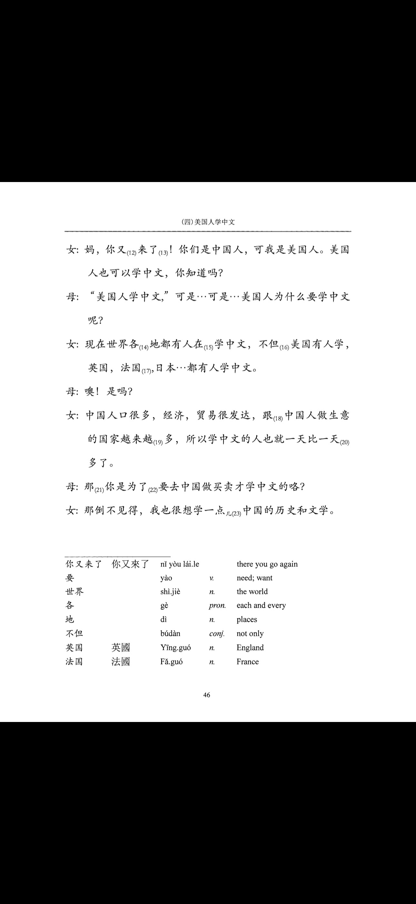
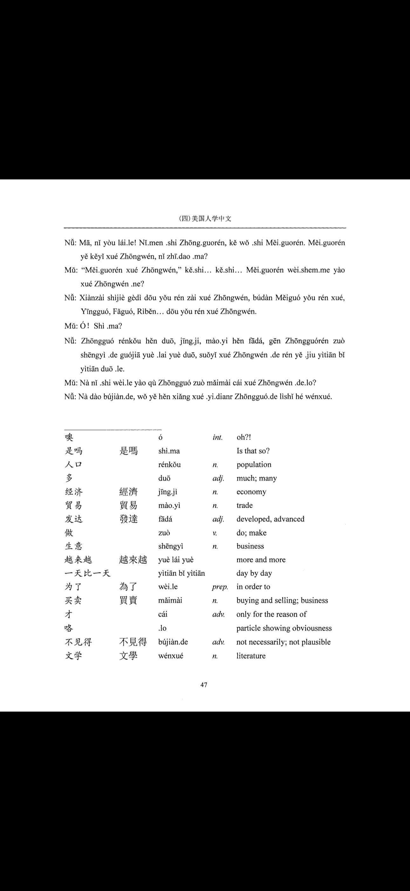
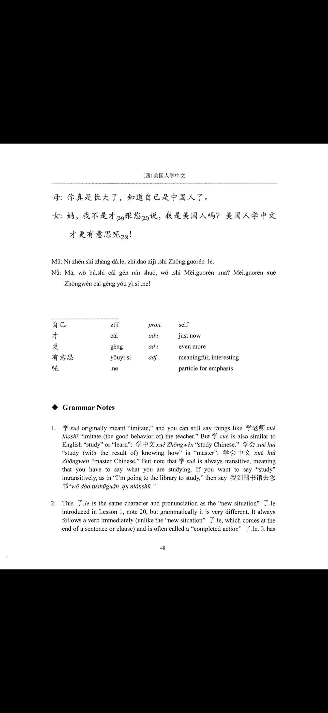

← Home
Quiz Modes
Char → Pinyin
Char → Pinyin (MC)
Char → Pinyin (Tones MC)
Char → Tones
Audio → Pinyin
Pinyin → Char
Char → Meaning
Audio → Meaning
Meaning → Char
Stroke Order
Handwriting
Draw Character
Study Mode
Lesson 4 Part 2: 美国人学中文 · Vocab (Pages 46–48)
Upcoming
🔊 Play Sound
Check Answer
Practice writing on paper, then reveal the answer
💡 Audio will play for each character as it appears
Show Answer / Replay
Next
Real-time recognition
🗑️ Clear
✓ Submit
⛶ Fullscreen
Draw:
↶ Undo
↷ Redo
🗑️ Clear
✓ Submit
💡 Answer
→ Next
✕ Exit
Study vocabulary with the original textbook scans (pages 46–48).
Page 46

Open full size ↗
Page 47

Open full size ↗
Page 48

Open full size ↗
Quick list of this lesson's vocab. Use search or sorting as needed.
Score:
0
/
0
Accuracy:
0%